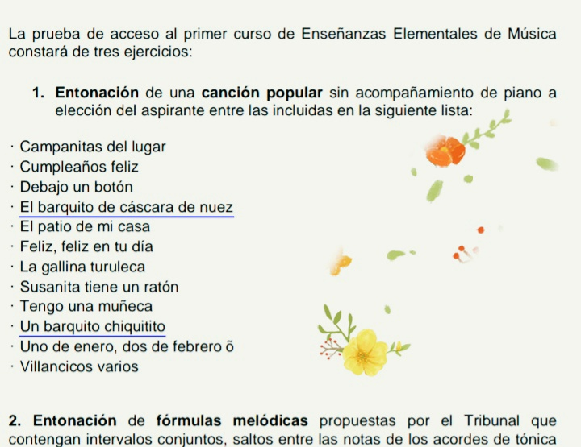
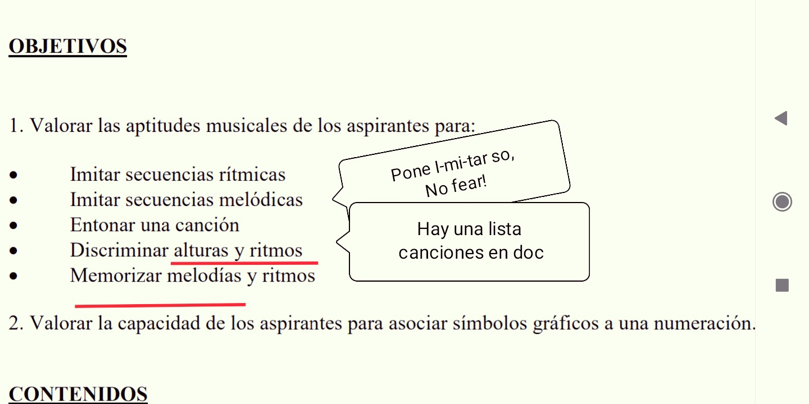

Notes, 1EEE, Training Ideas, Sample Test, etc.
Table of Contents
El Candidato ~~`
En una de las recomendaciones que aparecen en el sitio web del conservatorio, al parecer relacionadas con la evaluación de acceso, se menciona, aunque sin entrar en detalles, un ejercicio que forma parte de una batería de ejercicios llamados de coordinación visomotriz. Y, ciertamente, la coordinación viso-motriz involucra un conjunto de destrezas que se ponen marcha si tratáramos de escribir música o expresarnos con un instrumento. Esto es, denotar con un conjunto de símbolos, los elementos involucrados en la música: rango del sonido, duración, silencio, patrón rítmico, etc.
Pero, aunque tal evaluación interesa, es necesario mencionar que en contextos reales de evaluación de la coordinación viso-motriz, se tiene por sabido que si el evaluado tiene alguna clase de actividad que lo pone en situación de familiaridad con el manejos de tales asociaciones símbolo-signo, la prueba puntúa menos, es decir, no ayuda a describir la destreza. Es por eso que encuentro importante referir el siguiente clip de vídeo como una prueba más eficiente de las destrezas del candidato, o su madurez para manejarse con la detección de fallos en un patrón de secuencias. El ejercicio se llama debugging, consiste en detectar en un programa o secuencia de movimientos que intencionalmente no funciona, dónde está el movimiento erróneo y corregirlo (Fuente del ejercicio: Introduction to computer science for early readers, 4-6 years old, lesson 5, Maze Debugging.)
El candidato tenía 47 meses de edad en la fecha del vídeo que presentamos a continuación. Una prueba clara que puntuaría a favor en la evaluación de aptitudes requeridas en el aprendizaje del lenguaje de la música.
Exam Access

La versión 2019 no es diferente de la de años anteriores, aunque vista como la exponen parezca más difícil, recordar es una prueba aptitudes. Hay que prepararse pero no amedrentarse (aquí la expresión resumen es: No fear!). Los 2 primeros objetivos pone i-mi-tar. Luego entonar una canción (hay una lista en el documento anterior, echad un vistazo). Luego se menciona me-mo-ri-zar. So, el examinador tamborileara o cantará la frase de alguna canción y el niño tendrá que repetir.

Notas de Video
Más Simulacro Examen.
Otro Ejercicio Examen.
La clave de este ejercicio es que tal como es presentado puede parecer intimidatorio, por eso lo he listado. A fin de, a base de repetirlo con naturalidad, familiarizar al niño con las palabras que (probablemente) se usen y demás.
Una idea, a partir del ta ta ta ta…
Do re mi fa sol..
Ritmo y Cuerpo
Pool Canciones
1. "Debajo un botón..."
2. "Los pollitos dicen pío.."
3."Todos quieren ser un gato jazz"
4. "La rana que cantaba debajo del agua.."
5. "Las notas musicales"
6. "Yo soy tu amigo fiel"
7. "Los tres chanchitos."
8. "Tengo una vaca lechera"
9. "Nanan Casa da floresta."
10. "La mar estaba sarana..."
11. "El baile del sapito."
12. "Las notas musicales"